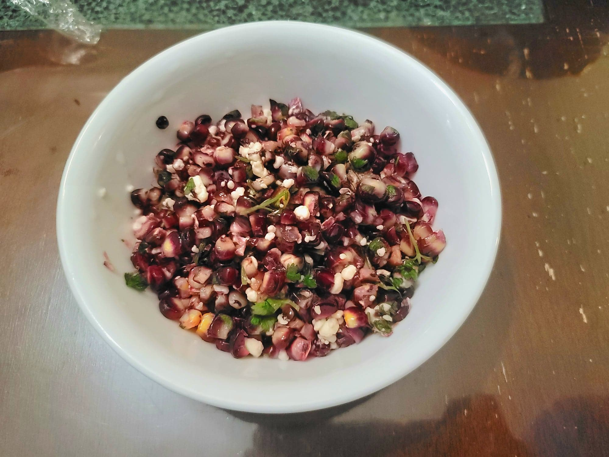

Red Corn with Cotija

Ingredients:
- 2 ears Red corn, kernals only
- 2 tsp Olive oil
- 1/2 tsp Sugar
- 1/2 tsp Lime juice
- Salt, to taste
- Pepper, to taste
- 1 1/2 tbsp Cotija, crumbled
- 1 tbsp Cilantro, chopped
Instructions:
- Heat the olive oil in a large pan over medium-high heat. Add the corn kernals and sugar. Sauté for 2-3 minutes.
- Add the lime juice and season with salt and pepper to taste. Sauté for another 1-2 minutes. Remove from the heat and toss with the cotija and cilantro.